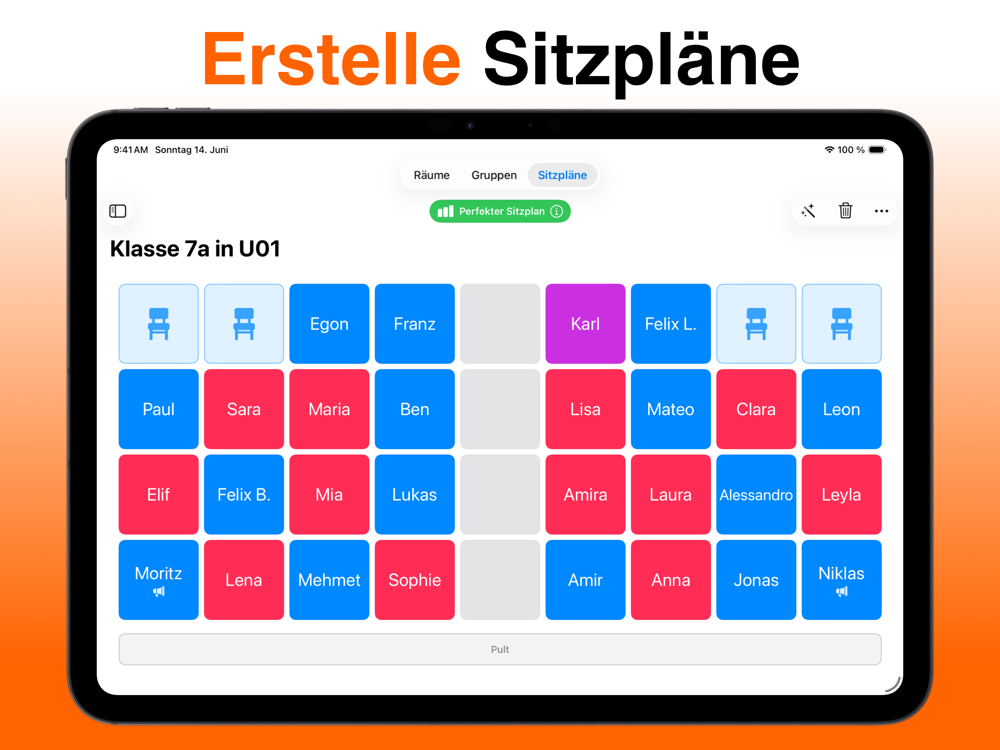
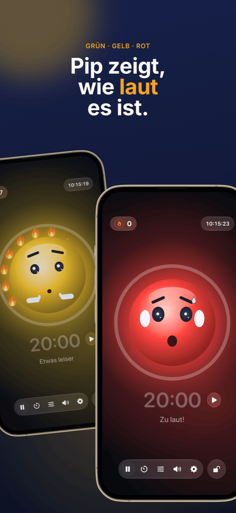

Classroom Management: Sitzplan, Gruppen & Lautstärke im Griff
Gute Klassenführung fällt kaum auf, und genau das ist ihr Ziel: Die Stunde läuft, Übergänge klappen, und die Zeit gehört dem Lernen statt dem Ermahnen. Drei Fragen stellen sich dabei in fast jeder Stunde neu: Wer sitzt wo? Wer arbeitet mit wem? Und wie laut darf es gerade sein? Dieser Ratgeber zeigt einen Workflow, der alle drei beantwortet, bevor sie zum Problem werden.
Was Classroom Management eigentlich meint
Classroom Management, auf Deutsch meist Klassenführung, ist mehr als Disziplin. Der US-Psychologe Jacob Kounin hat schon in den 1970er-Jahren gezeigt, dass sich erfolgreiche Lehrkräfte weniger darin unterscheiden, wie sie auf Störungen reagieren, sondern darin, wie gut sie Störungen vorbeugen. Zu seinen Merkmalen gehören:
- Allgegenwärtigkeit: Die Klasse spürt, dass du den ganzen Raum im Blick hast.
- Reibungslosigkeit und Schwung: Übergänge zwischen Phasen kosten keine Minuten, die Stunde verliert nicht ihren Takt.
- Gruppenmobilisierung: Alle bleiben beteiligt, nicht nur die, die gerade dran sind.
Viel davon ist Haltung und Erfahrung. Ein Teil aber ist schlicht Organisation, und die lässt sich vorbereiten. Genau dort setzt der folgende Workflow an.
Schritt 1 · Einmal vorabKlassenliste einmal anlegen, überall nutzen
Der größte Zeitfresser ist Doppelarbeit. Exportiere die Klassenliste einmal als CSV aus Excel, Numbers oder Google Sheets. Sowohl Platzwahl als auch Team Zufall importieren diese Datei direkt, die ganze Klasse ist in Sekunden angelegt. Beide Apps speichern die Namen ausschließlich lokal auf dem Gerät, ohne Konto und ohne Cloud. Das ist bei Schülerdaten kein Detail, sondern Voraussetzung.
Schritt 2 · Das FundamentDer Sitzplan: Störungen vorbeugen, bevor sie entstehen
Die Sitzordnung ist das wirksamste Werkzeug der Klassenführung, weil sie jede Minute wirkt, ohne dass du etwas sagen musst. Wer neben wem sitzt, entscheidet über Nebengespräche, Ablenkung und Konzentration. Bewährt hat sich:
- Unruhige Schüler trennen, nicht nur nebeneinander, sondern auch hintereinander.
- Nähe nutzen: Wer Unterstützung braucht oder schnell abschweift, sitzt im direkten Blickfeld.
- Ruhige Anker zwischen lebhaften Schülern verteilen.
- Regelmäßig wechseln, etwa nach den Ferien oder monatlich, damit sich keine festen Störecken bilden.
Mit Platzwahl legst du diese Regeln pro Schüler fest (Störpotenzial, vorderer Platz, Wunschnachbarn, Trennungen) und lässt den Plan automatisch berechnen. Ein Score zeigt, wie gut alle Regeln erfüllt sind. Der fertige Plan geht als PDF aufs Pult. Mehr dazu: Sitzordnung im Klassenzimmer und Sitzplan erstellen.

Schritt 3 · Kooperative PhasenGruppen fair einteilen, ohne Diskussion
„Dürfen wir uns selbst aussuchen?“ ist die Frage, mit der viele Gruppenphasen schon verloren sind. Freie Wahl kostet Zeit, festigt Cliquen und lässt immer dieselben übrig. Gezielte Einteilung ist fair, aber aufwendig, und für eine zehnminütige Partnerarbeit lohnt sie sich kaum.
Für die vielen kurzen Phasen ist Zufall die beste Lösung: Er ist schnell, niemand fühlt sich bevorzugt, und die Klasse lernt, mit allen zusammenzuarbeiten. Wichtig ist, dass der Zufall sichtbar ist. Wenn die Klasse am Beamer sieht, wie die Namen gemischt werden, gibt es keine Diskussion.
In Team Zufall wählst du die Teamanzahl, wählst Abwesende mit einem Tipp ab und lost aus. Die Teams lassen sich groß an die Wand beamen oder als PDF exportieren. Für längere Projekte, bei denen bestimmte Kombinationen vermieden werden müssen, bleibt die gezielte Einteilung die bessere Wahl. Eine Übersicht bietet Gruppeneinteilung: 5 Methoden im Vergleich.
 Schritt 4 · Arbeitsphase
Schritt 4 · Arbeitsphase
Lautstärke sichtbar machen statt ständig ermahnen
Gruppenarbeit ist laut, und das ist in Ordnung. Problematisch wird es, wenn niemand mehr weiß, wie laut zu laut ist, und du die Stunde mit „Psst!“ verbringst. Ermahnungen nutzen sich schnell ab und unterbrechen genau die, die gerade konzentriert arbeiten.
Besser funktionieren drei Dinge:
- Lautstärke vereinbaren: Leg mit der Klasse fest, was in welcher Phase gilt. Flüstern bei Stillarbeit, Partnerstimme bei Gruppenarbeit.
- Lautstärke zeigen: Eine Lärmampel am Beamer gibt der Klasse selbst die Rückmeldung, die du sonst mündlich geben müsstest.
- Ruhe würdigen statt Lärm bestrafen: Wenn die Ampel nur rot wird und etwas wegnimmt, wird sie schnell zum Druckmittel, und einzelne laute Schüler zum Sündenbock der Klasse. Wirksamer ist ein gemeinsames Ziel, das die Klasse erreichen kann.
Genau dafür ist Ruhe gebaut: Ein Maskottchen zeigt grün, gelb oder rot, und solange es ruhig ist, entzündet sich eine Flamme nach der anderen. Zwölf Flammen ergeben einen vollen Kranz, und das wird gefeiert. Die Schwellen für Gelb und Rot stellst du pro Phase passend ein oder lässt Ruhe sich selbst kalibrieren. Ein Timer zeigt die Restzeit der Arbeitsphase, die Beamer-Ansicht bringt alles groß an die Wand, und die Bedienung bleibt auf deinem iPad. Ruhe misst nur die Lautstärke, nichts wird aufgenommen.

Schritt 5 · AbschlussErfolge sichtbar machen
Am Ende der Stunde zählt, was geklappt hat. Ein voller Flammenkranz ist ein guter Anlass für ein kurzes Lob an die ganze Klasse. Und wenn es heute nicht geklappt hat, ist das eine Gelegenheit, gemeinsam zu überlegen, woran es lag, ohne Schuldige zu suchen. Wiederkehrende Probleme an bestimmten Tischen sind ein Hinweis, dass der nächste Sitzplan fällig ist.
So sieht eine Stunde mit diesem Workflow aus
| Phase | Was passiert | Werkzeug |
|---|---|---|
| Vor der Stunde | Sitzplan liegt aus, alle wissen, wo sie sitzen. Kein Gerangel um Plätze. | Platzwahl |
| Einstieg | Frontalphase in der festen Sitzordnung. | – |
| Übergang | Teams werden am Beamer ausgelost, Abwesende sind abgewählt. | Team Zufall |
| Arbeitsphase | Lärmampel und Timer laufen am Beamer, die Klasse sammelt Flammen. | Ruhe |
| Sicherung | Rückkehr an die festen Plätze, kurzer Blick auf den Flammenkranz. | Ruhe |
Häufige Fragen
Was bedeutet Classroom Management?
Classroom Management, auf Deutsch meist Klassenführung, umfasst alles, was eine Lehrkraft tut, damit möglichst viel Unterrichtszeit tatsächlich Lernzeit ist: Regeln und Routinen, Raum- und Sitzordnung, reibungslose Übergänge und ein Blick auf die ganze Klasse. Es geht weniger ums Reagieren auf Störungen als darum, sie gar nicht erst entstehen zu lassen.
Was hilft, wenn die Klasse dauerhaft zu laut ist?
Zuerst klären, welche Lautstärke in welcher Phase erlaubt ist, und das mit der Klasse vereinbaren. Dann die Lautstärke sichtbar machen, statt ständig zu ermahnen, zum Beispiel mit einer Lärmampel am Beamer. Wirksam ist vor allem, ruhige Phasen positiv zu würdigen, statt nur Lärm zu sanktionieren.
Ist eine Lärmampel im Unterricht sinnvoll?
Ja, wenn sie als gemeinsames Ziel und nicht als Strafinstrument eingesetzt wird. Die Schwellen sollten zur Phase passen, Gruppenarbeit darf lauter sein als Stillarbeit. Eine Ampel, die Ruhe belohnt statt Lärm zu bestrafen, verhindert, dass einzelne laute Schüler zum Sündenbock der Klasse werden.
Sollte man Gruppen zufällig oder gezielt einteilen?
Beides hat seinen Platz. Für kurze, häufige Partner- und Gruppenphasen ist Zufall ideal: schnell, fair und ohne Diskussion, wer mit wem. Für längere Projekte oder heikle Konstellationen lohnt sich die gezielte Einteilung. Der Sitzplan selbst sollte dagegen immer gezielt geplant werden.